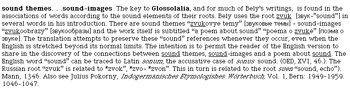

preface notes
G l o s s o l a l i a "glossolália Also in Anglicized form glossólaly [f. Gr. glosso- [tongue] + -lalia [speaking]. The faculty or practice of speaking with 'tongues.'" The Oxford English Dictionary, 2nd ed. (Oxford: Clarendon Press, 1989), Vol. VI, 593.
On the cover of the 1922 Epoxa edition the title was spelled Glossaloliya , as well as in an the excerpt of the work printed in Drakon in 1921. The cover designed by Sergei Zalshupin is not helpful. It has in all capital letters the Russian script G L O S S A L O L I YA In the introduction and in the text, Bely consistently spelled the word with the "a" vowel after the double "ss" and as "-lolia" instead of "-lalia." In 1917 Bely published his article "Aaron's Rod" (Zhezl Aarona) in which the word glossolaliya appears (p. 669). In their article "Literaturnoe nasledstvo Andreya Belogo", K. Bugaeva and A. Petrovskij (Literaturnoe nasledstvo, 27-28, 1937, p. 623) identify the text as Glossolaliya, pointing out that the spelling Glossaloliya is a misprint. In the index of Bely's archive at Russian Archives of Literature the work is also identified as Glossolaliya. I recently examined Bely's own "Life Line " [Liniya zhizni] in which under the year 1917-1918 he notes the title as Glossolaliya.
Dmitrj Tschizewskij who was responsible for the reprint edition of the work in 1971 (Munich: Slavisches Propyläen, Band 109) has a footnote to his own introduction to the work in which he says: "In meinen Händen befand sich vor Jahren ein Exemplar, auf dessen Umschlag der Titel "Glossolalija" heiß. Der Name stammt von gr. 'glossa' oder "glotta") &emdash; die Sprache." (v). Note that Tschizewskij uses the root glossa, typically found in Russian words.
John Elsworth routinely "corrects" the title and uses Glossolalia. The assumption of all is that since the spelling "-alolia" seems to make no sense, that it is a misprint, a typographical error, and that Bely's intention was to name his work Zungenreden, as the Deutsche Bucherei notes in its card catalogue. In my article on "Andrei Bely's Glossalolia: A Berlin Glossolalia," Europa Orientalis 14 (1995), 2, pp. 7-25, I discussed the confusion surrounding the title of the work in a footnote [No. 13] : Vera Lourie in the title of her review spells it: Glossalaliya. Bobrov and Chatskij use Glossaloliya. In 1996 I received a note from Taja Gut who has been working on a book about Bely and who carefully examined materials found in the Rudolf Steiner Archives in Dornach, Switzerland. With his permission I quote:
Zürich, 2.VI.96
Dear Tom,
concerning the title of Bely's GLOSSOLALIJA (the question of its misprint, as you discuss it in footnote 13 of your article in Europa Orientalis), it might be of interest for you to hear that there is a copy of the book, dedicated and sent by Bely to Marie Steiner, in the Archiv of Rudolf Steiner Nachlassverwaltung in Dornach, as I recently discovered. Bely there corrected the title by hand,... (Letter of Taja Gut to author)
On the enclosed copies it was clear that the corrections to the letters "o" and "a" made by hand to the title page and the Introduction match the handwriting of the inscription to Maria Yakovlevna Steiner signed by Andrei Bely and dated Berlin 5. December [19]22. Thus it would seem that Bely himself was already aware of the misprint shortly after the publication of the work in the fall of 1922, and that his intention was to entitle his work GLOSSOLALIYA. I am grateful to Taja Gut for his careful reading of my article and pointing out this new information. Likewise I am indebted to him for copies of the pages containing those corrections and the dedication. They were reprinted in the Andrei Bely Society Newsletter with the kind permission of the Rudolf Steiner Nachlassverwaltung.
There is however, some reason to wonder if it might actually be interpreted differently, i.e that it is a misprint, or an error in Bely's hearing or memory, that exchanges not &endash;lolia for -lalia, but -lolia for -logia. The distinction between Russian script for "g" and "l" is not that great The German Professor of Classical Philology at Oxford, F. Max Müller, uses the word "glottology" or "Glossology" (Lectures on the Science of Language, p. 4) to designate "the science of language." Müller is cited in Bely's text and he is also mentioned by Rudolf Steiner. The word "glóssology" in English comes from "[glosso+ Gr. logia [discourse] The study of a language or languages. The science of language. (=Glóttology)." (OED, VI, 593-594).
In any case the Russian equivalents of the word, if it is pronounced on the first syllable, results in identical pronunciation of either -alolia and -olalia because of the reduction of unaccented vowels.
Still one wonders what was in Bely's and in the mind of Sergei Zalshupin, the cover illustrator, when they boldly proclaimed this work in 1922 as GLOSSALOLIYA?
five years after it was written The text is followed by the signature of Bely and dated Tsarskoe Selo, October 1917. Bely who had been abroad since 1914 and had worked on building the first Gotheanum at Dornach, the chosen sight for the colony of Anthroposophists guided by Rudolf Steiner, had returned to Russia to answer a draft notice. He was subsequently given a medical waiver. An excerpt of the work was published in Drakon in 1921. The work was first published in its entirety in Berlin in 1922 by the Epoxa Verlag in a run of 1500 copies. A reprint of this edition appeared as mentioned in 1971. The work was printed in Russia for the first time in Tomsk (1994).
In April 1922 Bely had given an impromptu lecture on the theory of Glossolalia. Bely who had always been fascinated by the relationship between sound and meaning was particularly engaged with sound themes that year.

figurative . . . beyond the figurative The word play revolves around the Russian word for "image" [obraz] in the forms [zvukoobrazy], [obraznyj], and [vne-obraznyj]. The more traditional translation of [obraznyj] is "figurative." I have tried to maintain in English a single root, although I originally considered the root "imago," using the adjective "imaged" (See OED, VII, 665). The problem is, of course, that languages develop along there own paths. In addition, Bely often uses a Russian translation of Rudolf Steiner's terminology. The Russian word [obraz] can be translated into German as "Bild" or "Gestalt." The Russian word for "education" [obrazovanie] is a calque from German "Bildung." Translations of Steiner's work into English use "mental image" for "Bild" and the term "super-" or "supra-" for "that which is beyond."
roots A note on etymology and notation. The beginning of interest in classical philology, one of the forerunners of linguistics, can be traced to the second half of the 1700's. As a result of British contact with the writings of India, including the olden texts, there was a new familiarity with and study of Sanskrit. It was in 1786 that William Jones first pointed explicitly to the relationship between Sanskrit, Greek, Latin, Gothic and Celtic. As Max Müller notes this led to the observation that many not only many Greek and Latin words were related by sound, but that Sanskrit also had many words similar in meaning and sound. Throughout the nineteenth century scholars pursued these similarities in an effort to establish the very beginnings or origin of language. The attempts have not identified any texts of this initial language, called by some Indo-European, by others Indogermanisch, and also Aryan, but a reconstruction with complicated rules governing the subsequent changes throughout languages were made. In the twentieth century some of this work has continued in etymological dictionaries. Etymology for the Greeks was "the true meaning of the word." The standard study is Julius Pokorny. Others include Stuart E. Mann, An Indo-European Comparative Dictionary Hamburg 1984/1987. These books list "roots" that while they do not always exist in any one of the languages studied, appear to have been a point of departure for similar sounding words of like meaning in a cross section of languages. These roots are sometimes preceded by an *, the convention to indicate that their existence has not been confirmed in actual texts.
poem Russian [poéma] is a longer poem, sometimes an epic.
"Christ has Risen" [Khristos voskrese] (1918) "The First Encounter" [Pervoe svidanie] (1921). Both were long poems (poema). The First Encounter has been translated into English by Gerald Janecek.
July 1, 1922, Berlin. Bely had given an impromptu talk on eurythmy in the Berlin Russian House of the Arts on April 7. Cf. Thomas Beyer "Andrei Bely &emdash; the Berlin Years 1921-1923." Zeitschrift fuer Slavische Philologie, L (1990), 90-142. In May and June he composed his collection of verse, "After the Parting" [Posle razluki], under the influence of Marina Tsvetaeva. Cf. Thomas Beyer "Marina Cvetaeva and Andrej Belyj: Razluka and Posle Razluki." Wiener Slawistischer Almanach 35 (1995), 97-132. He called this work "a song book" [pesennik]. Bely was profoundly fascinated with the workings of sound in mid-1922 leading up to his publication of Glossolalia. It would be incorrect to accept Marina Tsvetaeva's observation some dozen years later that the work had been written under her influence. What is more likely is the assertion that the influence of the work could be felt in Bely's later works as noted by Bugaeva and Petrovskij.
\